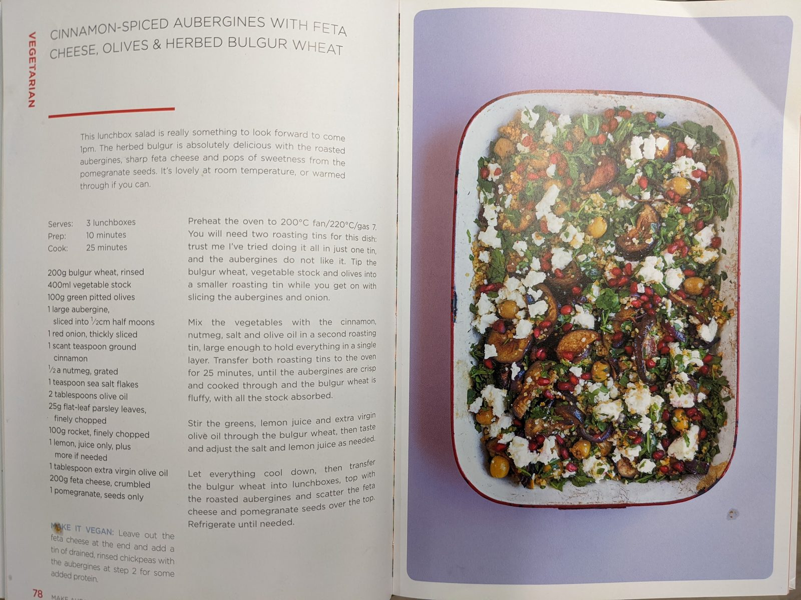

Aubergine Bulgar Roast
Cinnamon-spiced aubergines with feta, olives and herbed bulgur wheat.

Before you start heat the oven to 200°C fan.
Ingredients
Method
- Preheat the oven to 200°C fan. You will need two roasting tins for this dish — doing it all in one tin does not work, as the aubergines do not crisp.
- Tip the 200g bulgur wheat, 400ml vegetable stock and 100g green olives into a smaller roasting tin while you get on with slicing the aubergine and onion.
- Mix the 1 large aubergine and 1 red onion with the 1 scant tsp ground cinnamon, ½ grated nutmeg, 1 tsp sea salt flakes and 2 tbsp olive oil in a second roasting tin, large enough to hold everything in a single layer.
- Transfer both roasting tins to the oven for 25 minutes, until the aubergines are crisp and cooked through and the bulgur wheat is fluffy, with all the stock absorbed.
- Stir the 25g parsley, 100g rocket, juice of 1 lemon and 1 tbsp extra virgin olive oil through the bulgur wheat, then taste and adjust the salt and lemon juice as needed.
- Let everything cool down, then transfer the bulgur wheat into lunchboxes, top with the roasted aubergines and scatter the 200g feta and pomegranate seeds over the top. Refrigerate until needed.
Notes
- Makes 3 lunchboxes. Lovely at room temperature, or warmed through.
- Make it vegan: leave out the feta at the end and add a tin of drained, rinsed chickpeas with the aubergines at step 3 for some added protein.
- Transcribed from a photographed cookbook page (p.78).